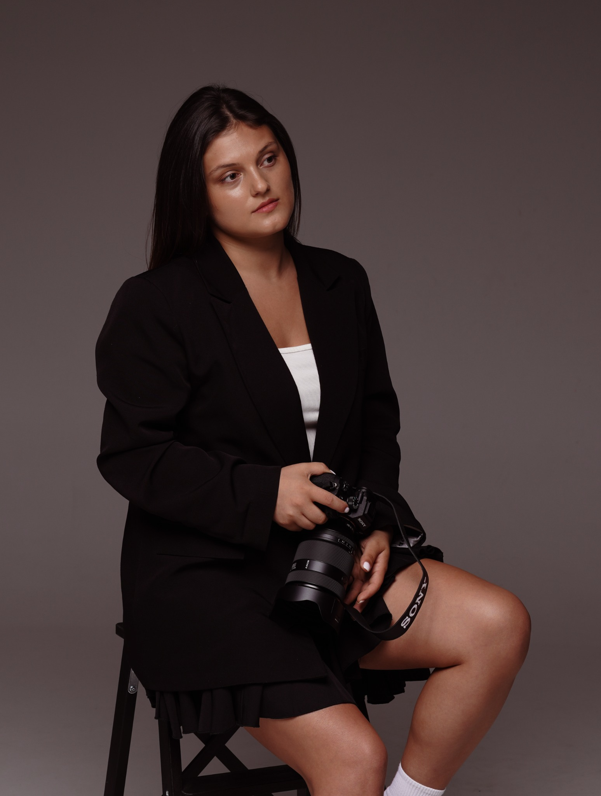

Moments by TM
პორტრეტები, წყვილის, საოჯახო და ნათლობის ისტორიები — ნაზი მიმართულებით, ბუნებრივი ემოციებით და ყურადღებით თითოეულ დეტალზე.

სინამდვილე ყველაზე ლამაზია, როცა მას არ ვაძალებთ.
ჩემი მიზანია ფოტოსესიაზე თავი თავისუფლად იგრძნოთ. არ არის საჭირო „იდეალური პოზა“ — საკმარისია თქვენი ურთიერთობა, მოძრაობა, ღიმილი და ის პატარა ჟესტები, რომლებიც მხოლოდ თქვენ გეკუთვნით.
კადრები, რომლებშიც ემოცია მთავარია
რამდენიმე ისტორია ჩემი პორტფოლიოდან — განსხვავებული ადამიანები, გარემო და განწყობა, მაგრამ ერთი საერთო იდეა: ნამდვილი მომენტი.

აირჩიეთ თქვენი ისტორიის ფორმა
ყველა ფოტოსესია ინდივიდუალურად იგეგმება — ლოკაცია, განწყობა და ვიზუალური მიმართულება თქვენზე მორგებით.
ინდივიდუალური
ბუნებრივი ან editorial ხასიათის სესია, რომელიც თქვენს სტილსა და ხასიათს უსვამს ხაზს.
წყვილის
მოძრაობა, ჩახუტება, სიცილი და მშვიდი მომენტები — ზედმეტი დადგმის გარეშე.
საოჯახო
კადრები, სადაც ოჯახური კავშირი და ბავშვების ბუნებრივი ემოცია რჩება მთავარი.
ნათლობა / ჯვრისწერა / დაბადების დღე
რეპორტაჟული გადაღება — მთავარი მომენტები, ემოციები და დეტალები ერთ ისტორიად.
ქორწილი
დღის მთავარი ამბავი, ემოციური კადრები, დეტალები და ადამიანები ბუნებრივი რეპორტაჟული ხედვით.
Cinematic.
Warm.
Timeless.
მინდა თქვენი ფოტოები წლების შემდეგაც თანამედროვე და ახლობელი დარჩეს — არა ტრენდზე დამოკიდებული, არამედ ემოციაზე დაფუძნებული. ამიტომ ვირჩევ თბილ ფერებს, ბუნებრივ შუქს და კადრებს, სადაც ადამიანი საკუთარ თავს ჰგავს.
ბუნებრივი ემოცია
მიმართულებას გაძლევთ, მაგრამ კადრს თავისუფლებას ვუტოვებ.
თბილი ფერი
რბილი, ორგანული ტონები, რომლებიც კანის ფერს და გარემოს ინარჩუნებს.
დეტალების ამბავი
ხელები, მზერა, ქსოვილი, სინათლე — ყველაფერი, რაც ისტორიას ავსებს.
დავგეგმოთ ფოტოსესია, რომელიც თქვენ გგავს
მომწერეთ იდეა, სასურველი თარიღი და ფოტოსესიის ტიპი — დანარჩენ დეტალებს ერთად დავალაგებთ.